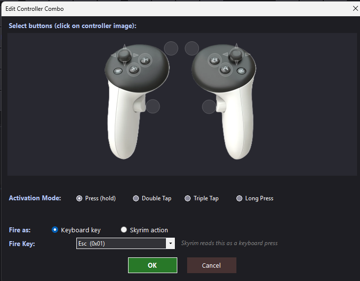
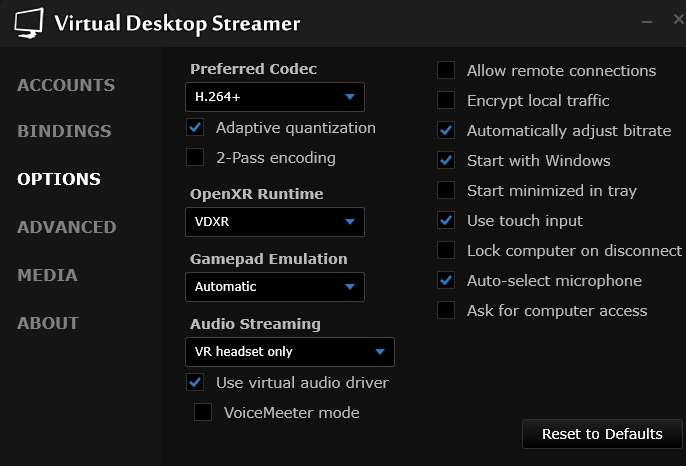
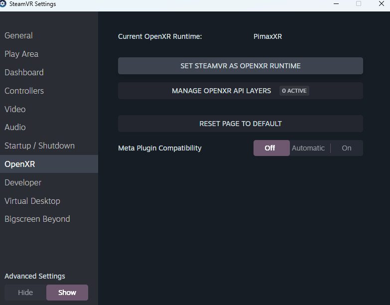
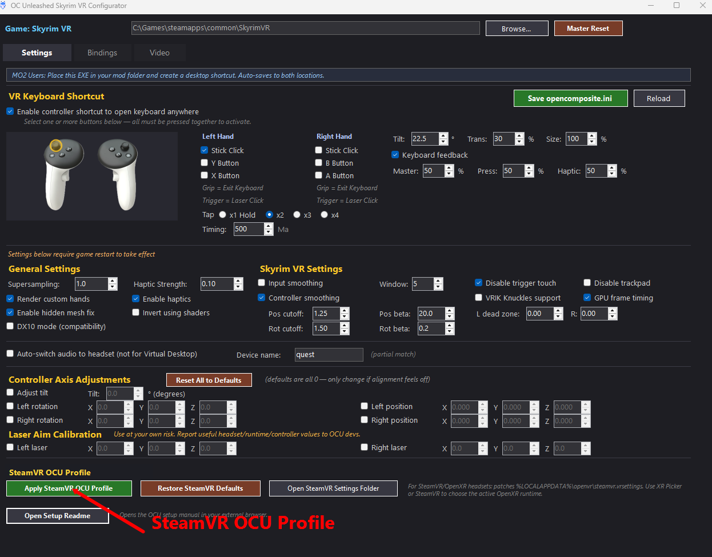

Support The Work
OCU is maintained through active development, testing, and debugging. Historically, there have been many mods that have been out of reach for VR. The goal of OCU is to fundamentally change the Skyrim VR experience into a proper VR game that will work with most mods available to players on desktop. OCU developers put a lot of hard work and dedication into creating, maintaining, and troubleshooting this experience. We do this because we love this community. Any support you can offer that helps further this goal is appreciated.
Contents
Critical: Bindings First Installation And Root Files Runtime Model Meta / Quest / Virtual Desktop Setup SteamVR OpenXR Headsets Clean OCU Removal / Return To SteamVR Configurator Settings Complete Tab-By-Tab Settings Reference Controller And Laser Alignment Community Shaders And Upscaling DAPA Experimental Notes TroubleshootingCritical: Bindings First
OCU ships with its own binding presets in the Configurator. Use those presets as the source of truth.
If you already have custom Skyrim VR bindings, VRIK controlmap edits, or another controlmapvr.txt
being supplied by a mod, remove and disable the conflicting file. OCU must control the bindings because
multiple keyboard and controller input paths need to block certain game actions to prevent crashes.
Included Presets
- VRIK V2.1.0: default recommended starting point. This is what most Skyrim VR players use.
- VR Safe: reestablishes original VRIK plus the original keyboard layout. Using the keyboard to walk in-game or activate items can crash the game.
- VRIK Alternate: alternate VRIK layout.
- Kvite: included community preset.
- Vanilla: baseline Skyrim VR layout.
- Vanilla + Oculus Touch Hotkeys: vanilla-style layout with Oculus Touch hotkey additions.
Controller Combo Bindings
Controller combos are configured on the Bindings page and saved to the [combos] section of
opencomposite.ini. A combo does not directly rewrite the game action at runtime. It watches
controller input, then sends one keyboard scancode. Skyrim then resolves that key through the active
controlmapvr.txt.
- Multiple buttons: every selected button must be pressed together for the combo to count.
- Press: fires once when all selected buttons are down, then resets after release.
- Double / Triple / Quad tap: counts clean combo presses inside the configured timing window.
- Long press: fires after all selected buttons are held for the configured timing window.
- Fire as keyboard key: sends the selected key scancode directly.
- Fire as Skyrim action: looks up that action's controlmap key and sends the matching scancode.
The runtime supports up to 16 combos. Larger button combos are checked before smaller ones, so a combo like
Grip + A + B is not eaten by a simpler Grip + A combo first. Combos are disabled
while the OCU keyboard is open so keyboard input does not fight itself.

Installation And Root Files
OCU is not only a normal Data-folder mod. It includes root files that must land beside SkyrimVR.exe.
The most important root files are openvr_api.dll and opencomposite.ini.
In the Configurator, the game path must point to the folder that contains SkyrimVR.exe.
That folder varies by user and mod manager. A heavily modded Skyrim VR install should not live under
Program Files (x86); Windows protected-folder behavior can block writes or make root-file
deployment look broken. Use a dedicated Steam library path such as C:\Games\steamapps\common\SkyrimVR
or another non-protected folder.
SkyrimVR.exe. The exact path varies by user.Mod Organizer 2
- Install OCU as an MO2 mod.
- Make sure the archive's
rootfolder is deployed or virtualized into the real Skyrim VR game folder. - Put the Configurator EXE in the OCU mod folder. The Configurator is designed to save to both the mod folder and the game location.
- After saving, verify
opencomposite.iniandopenvr_api.dllare present besideSkyrimVR.exeat launch.
MO2 Root Folder: With And Without Root Builder
MO2's virtual file system only covers the Data folder, and only for programs launched through MO2.
Even current MO2 versions (2.5.x) have no built-in way to put files beside SkyrimVR.exe.
The Root folder inside the OCU mod needs one of the two setups below.
Option A: Root Builder plugin (recommended).
First check if you already have it: open MO2 and look under Tools > Tool Plugins. If a Root Builder entry is there (with Build / Clear / Sync), the plugin is already installed. Many Wabbajack lists ship with it. If so, skip straight to launching the game.
- Download the Root Builder plugin for MO2 (by Kezyma, on Nexus).
- Extract the
rootbuilderfolder into your MO2pluginsfolder and restart MO2. - Root Builder looks for a folder literally named
Rootinside each mod and deploys its contents besideSkyrimVR.exewhen you launch the game through MO2, then cleans up after (with autobuild on). The OCU package already uses this convention.
Root Builder has several modes. This choice matters for OCU:
- Copy mode (the default): use this. Files are physically copied to the game folder at launch. Most compatible.
- USVFS + Link mode also works: it virtualizes most files but hard-links
.exeand.dllfiles so they physically exist at launch. - Pure USVFS mode: do NOT use for OCU. Fully virtual root sounds ideal, but it struggles with files required at process launch.
openvr_api.dlland the FidelityFX / DLSS DLLs load when SkyrimVR starts, which is exactly the case that breaks. Symptom: the game launches through SteamVR as if OCU is not installed.
Option B: Manual copy (no Root Builder).
- Open the OCU mod folder in MO2 (right click the mod, Open in Explorer).
- Copy everything inside the
Rootfolder (openvr_api.dll,opencomposite.ini, the FidelityFX and DLSS DLLs) directly into the folder that containsSkyrimVR.exe. - Repeat the copy after every OCU update. Manual copies do not update themselves.
SkyrimVR.exe at launch.
Vortex
- Install and deploy the OCU package.
- Verify the root files deploy to the same folder as
SkyrimVR.exe, not only intoData. - Deploy SKSE/plugin files normally through the mod manager.
- Run the Configurator, save
opencomposite.ini, then restart Skyrim VR.
Runtime Model
OCU replaces the normal OpenVR path with an OpenXR path. Think of it this way:
Normal Skyrim VR
SkyrimVR -> SteamVR
OCU
SkyrimVR -> OCU -> active OpenXR runtime
If you only have one headset, your OpenXR runtime is usually already set to that headset's expected runtime. Enabling OCU makes Skyrim VR use that OpenXR runtime instead of the old SteamVR path. If you switch between multiple headsets, consider using XR Picker to choose the active OpenXR runtime.
Meta / Quest / Virtual Desktop Setup
Quest Link / Air Link
For wired Link or Air Link, use the Oculus/Meta OpenXR runtime. In this path, OCU sends Skyrim VR through Meta's OpenXR runtime.
SkyrimVR -> OCU -> Oculus OpenXR
Virtual Desktop On Quest
Virtual Desktop is mainly relevant for wireless headsets. For normal Quest wireless play through Virtual Desktop, use VDXR in Virtual Desktop Streamer.
SkyrimVR -> OCU -> VDXR

SteamVR OpenXR Headsets
Bigscreen Beyond, Valve Index style setups, and other SteamVR/OpenXR headset paths generally use Steam's OpenXR runtime.
SkyrimVR -> OCU -> SteamVR OpenXR
Wired SteamVR Headsets
- Open SteamVR Settings.
- Go to OpenXR.
- Click Set SteamVR as OpenXR Runtime if SteamVR is not already the active runtime.
- Open the OCU Configurator and apply the SteamVR OCU Profile.
- Launch Skyrim VR through your mod manager after OCU root files are deployed.

steamvr.vrsettings file.

Steam-Native Wireless Note
Future Steam-native wireless headsets or wireless adapters may still use SteamVR as the OpenXR runtime. If the headset's required runtime is SteamVR, use the same SteamVR OpenXR plus SteamVR OCU Profile path. Do not apply this assumption to Quest Virtual Desktop users; those should normally use VDXR.
If SteamVR Still Acts Wrong
Some problems come from global OpenVR/OpenXR changes outside this mod. If you used OpenComposite Switcher before, it may have changed settings that affect other games too. OCU does not automatically undo those global changes because doing so could break another game setup.
If disabling the OCU mod does not return Skyrim VR to the normal SteamVR path, check previous OpenComposite
Switcher changes, your active OpenXR runtime, and stale files beside SkyrimVR.exe.
Clean OCU Removal / Return To SteamVR
Data. OCU owns a small, explicit
set of root files; the Configurator can move those files into a recoverable backup without touching the game or Data.
MO2 With Root Builder
- Close Skyrim VR and SteamVR.
- Disable the OCU mod in MO2 so Root Builder cannot deploy it again.
- Run Tools > Root Builder > Clear. Do this before cleanup so Root Builder finishes its own deployment cycle.
- Close the MO2-launched Configurator, then launch the Configurator EXE directly from the OCU mod folder.
- Open SteamVR / Help and click Remove OCU Game-Root Files.
- Click Restore SteamVR Defaults to remove the separate OCU helper overrides from
steamvr.vrsettings. - If the Configurator reports that no trusted Valve loader backup exists, verify Skyrim VR files in Steam before launching normally.
Root Builder can accidentally record an older OCU openvr_api.dll as its original game file. In that state,
disabling the mod or running Clear can restore old OCU instead of Valve OpenVR. The removal button recognizes an
OpenComposite loader by its contents, moves it out of the game folder, and requests Steam Verify when no trusted
Valve backup is available.
Manual Or Vortex Installation
- Close Skyrim VR and SteamVR, then disable or purge the OCU mod.
- Launch the Configurator directly and use Remove OCU Game-Root Files.
- Use Restore SteamVR Defaults.
- Run Steam Verify only if the Configurator says the Valve loader could not be restored.
Removed files are moved to %LOCALAPPDATA%\OpenCompositeConfigurator\RuntimeBackups. Customized INI and gesture
files are preserved there. Unknown or mismatched binaries are left untouched instead of being guessed at.
Configurator Settings
SteamVR OCU Profile
The SteamVR OCU Profile resolves SteamVR's active steamvr.vrsettings file and patches it with OCU-friendly defaults.
It does not change your active OpenXR runtime.
- Apply SteamVR OCU Profile: backs up and patches SteamVR settings.
- Restore SteamVR Defaults: backs up and removes the OCU helper overrides.
- Open SteamVR Settings Folder: opens the folder containing
steamvr.vrsettings. - Remove OCU Game-Root Files: safely moves recognized OCU runtime files into a recovery backup. It does not touch
Dataor SteamVR's headset drivers.
Complete Tab-By-Tab Settings Reference
This reference follows the labels in the current OCU Configurator. Settings stored in
opencomposite.ini do not affect a game that is already running: click
Save settings, close Skyrim VR, and start it again. Save settings also saves pending controller
bindings and Index trackpad assignments. Save All Bindings saves the complete control map;
Save Custom… also creates a named controller preset.
Gesture edits hot-load within a few seconds unless the control itself says otherwise.
Settings Tab
Page controls
- Master Reset: resets and saves only the Settings page. It does not alter keyboard or controller bindings.
- Save settings: writes INI-backed settings and pending controller bindings, including Index trackpad assignments, to OCU's installed locations. Restart Skyrim VR afterward.
- Reload: discards unsaved INI edits in the window and reloads the currently installed configuration.
VR Keyboard Shortcut
- Enable controller shortcut to open keyboard anywhere: allows the chosen controller button or combination to open OCU's VR keyboard.
- Left/Right Stick, X/Y, and A/B selections: choose the physical buttons in the shortcut. Selecting more than one makes a chord; all selected buttons must be held together.
- Trackpad: adds an Index/Knuckles trackpad swipe shortcut. It appears only when the Index controller picture is selected.
- Tap: chooses single, double, triple, or quadruple activation. Multi-tap waits for the selected timing window before resolving the final tap count.
- Timing: length of the multi-tap window in milliseconds.
- Tilt / Trans / Size: keyboard angle, overall opacity, and physical display scale in VR.
- Keyboard: selects Parchment or an installed
.ocukbdesign. Studio-installed designs appear here automatically. - Open Keyboard Studio: launches the separate visual editor for keyboard layouts, fonts, artwork, states, and effects.
- Keyboard feedback: master switch for keyboard hover and press audio.
- Hover / Press: set the volume of hover and keypress feedback sounds.
General Settings
- Supersampling: multiplies OCU's render resolution. Above 1.0 is sharper and substantially more GPU-intensive; below 1.0 improves performance at the cost of clarity. It stacks with runtime supersampling.
- Controller models: Automatic prefers the installed SteamVR/Relos model, Legacy grey hands uses OCU's old hand model, and Off leaves controller/hand rendering to another mod such as VRIK.
- Enable hidden mesh fix: converts the runtime's hidden-area visibility mask for Skyrim VR. Leave it on unless the headset shows clipped edges or black wedges; it has no effect when the runtime supplies no mask.
- Invert using shaders: vertically flips eye textures through a shader. Use it only when the headset image is upside down.
- Keep player hands when controllers sleep: preserves the player's current left/right hand profile, bindings, and model while a controller sleeps or wakes instead of letting SteamVR temporarily replace that hand with a Vive wand. It does not keep the physical controller awake.
Skyrim VR Settings
- Input dropout protection: keeps the strongest recent stick, trigger, grip, button, and touch sample so a one-frame runtime dropout does not cancel the input. It is not averaging and can make releases linger.
- Hold samples: number of recent samples retained. Three to five is a practical starting range; higher values survive longer dropouts but add more release latency.
- Controller smoothing: applies adaptive One Euro filtering to controller position and rotation. It stabilizes virtual hands, not the HMD, sticks, or buttons.
- Pos/Rot base Hz: baseline position or rotation responsiveness. Lower values smooth more at rest; higher values preserve more immediate movement and more jitter.
- Pos/Rot response: how quickly fast movement breaks through the corresponding filter. Higher values reduce lag during rapid motion but admit more noise.
- Disable trigger touch: ignores capacitive finger contact on the trigger. Pulling and clicking the trigger still work.
- Disable thumbrest touch: prevents capacitive thumbrest contact from being exposed as the legacy bindable D-pad Up input.
- Disable legacy trackpad routing: disables Skyrim's upper/lower physical-trackpad click translation. It does not disable or emulate thumbsticks.
- VRIK Knuckles trackpad mode: routes the Index/Knuckles trackpad in the compatibility mode expected by VRIK gestures. Leave it off for other controllers. The adjacent Help button explains the matching Spell Wheel MCM options when you want to open its wheel with a physical trackpad press.
- Index grip holding: select the Index controller picture to show these controls. Runtime default preserves the runtime's existing grip behavior. Custom sensitivity enables Grab and Release thresholds for HIGGS Auto/Touch holding; Release must remain lower than Grab. Lower Grab makes pickup easier; lower Release makes a relaxed grip easier to maintain. The initial 0.50/0.25 values are tuning starting points, not factory calibration. Squeeze-button bindings remain independent. Applies to detected Index controllers with any headset; no headset connection is needed to configure it. Save settings and restart Skyrim.
- L/R dead zone: ignores small X/Y movement around the center of each physical stick. Raise only far enough to stop drift.
- Swap sticks: right moves, left turns: swaps stick axes and stick-touch state. Stick clicks and other buttons remain on their physical hands.
Audio
- Auto-switch audio to headset: changes the Windows default audio endpoint when OCU starts. Do not use it with Virtual Desktop, which owns its own audio routing.
- Device name: partial text used to match the desired Windows audio device.
Controller Axis Adjustments
- Adjust tilt: applies a shared forward/backward controller tilt in degrees.
- Left/Right rotation X/Y/Z: rotates each controller model around its three local axes.
- Left/Right position X/Y/Z: offsets each controller model in meters. These are model/grip-pose adjustments, not laser calibration.
- Reset All to Defaults: returns controller and laser calibration values to zero/default filtering values.
Laser Aim Calibration
- Enable menu lasers: enables OCU lasers in supported Scaleform menus. Disable for classic controller-only menu input. Requires save and restart.
- Smooth laser aim: applies adaptive filtering to the beam origin and aim direction.
- Pos Hz / Pos response: baseline smoothing and fast-motion response for the beam origin.
- Aim Hz / Aim response: baseline smoothing and fast-motion response for the beam direction.
- Left/Right laser X/Y/Z: rotates the OpenXR aim pose for each hand. It changes where the laser points; it does not move the controller model or the decorative binding dots.
Bindings Tab
- Keyboard Type: selects the Skyrim input context being edited, such as gameplay, menus, or inventory. Each context has independent mappings.
- Disable Mouse Bindings (VR): unbinds the mouse column in the VR control map to prevent conflicting desktop-style mouse actions.
- Key / Action: click a key in the keyboard diagram, then assign the Skyrim action for the selected input context. Choose the none option to unbind it.
- Save All Bindings: writes the entire
controlmapvr.txt—keyboard, mouse, gamepad, controller mappings—and saves controller combos. - Master Reset: resets the Bindings page to OCU's VR Safe defaults, removes known keyboard conflicts, and unbinds mouse mappings.
- Reset to Game Defaults: restores the embedded baseline game control map rather than the VR Safe preset.
- Validate Bindings: scans the live control map for known deterministic crash patterns, repairs known-safe cases, and reports ambiguous conflicts.
- Controller Type: selects the input context for controller editing, independently of the keyboard Type selector.
- Button / Action: click a dot on the controller picture and assign an action available in that input context. Index trackpad halves can have separate assignments when the VRIK trackpad-gesture option is off; their saved assignments are retained when that option is on.
- Drop on left A/X: adds the left face button to Item Menus / XButton (inventory Drop), preserving existing Drop buttons. Save and restart Skyrim afterward.
- Preset: selects a built-in or user-saved controller layout.
- Use Preset: applies and saves the selected controller layout. Selecting a preset alone is a preview. Keyboard, mouse, gamepad mappings and combos stay unchanged.
- Save Custom…: save the edits currently shown in the editor and store a named preset in one step. No separate save is needed. Presets restore controller mappings; combos remain separate installation settings.
- Remove: deletes a user-created preset. Built-in presets are embedded and cannot be removed.
- Controller Combos: maps a button chord or one-to-four-tap sequence to a keyboard key. If the same button has multiple tap counts, OCU waits through the configured tap window so it can resolve the intended count.
- Controller: changes the Configurator picture and dot layout between Quest Touch, Index Knuckles, and PSVR2 Sense. Click its adjacent Save button to retain the choice.
- Move dots: lets mod authors align the clickable binding dots with the controller artwork. It does not calibrate an in-game laser or change OpenXR controller coordinates.
Gestures Tab
- Left/Right drawing canvases: define one continuous stroke per hand. Drawing again replaces that hand's stroke; using both boxes creates a two-hand gesture.
- Gesture Library: loads, previews, edits, or deletes saved gestures.
- Clear Left / Clear Right / Clear Both: remove strokes from the selected canvas or both canvases.
- Smooth Shapes: cleans the current stroke once. Smooth as you draw applies cleanup continuously while authoring.
- Name: the saved gesture's display name.
- Key: keyboard key emitted when the Action is Press Key.
- Hold while gesturing: physical controller input that arms and records the gesture in game.
- Save Gesture: writes the gesture and hot-loads it into the running game within a few seconds.
- Action: chooses Press Key, instant spell cast, or equip spell in the left or right hand.
- Spell / Reload / Only spells I know: selects a spell from the exported game list, reloads that list, and optionally hides spells the player does not know.
- Trail / Rune: choose separate colors for the live tracing ribbon and the successful-completion flash.
- Width: controls the rendered trail thickness.
- Transparent / Smoky / Wispy / Glowing: combine visual style flags for the trail. Smoky adds billowing puffs; Wispy adds thin tendrils.
- Cast sounds: enables the tracing hum and successful-cast sound.
- Finish sound: selects the Impact or Dark successful-cast sound.
Video Tab
NVIDIA DLSS / DLAA
- Enable DLSS Super Resolution: enables NVIDIA NGX temporal upscaling. It is mutually exclusive with OCU FSR 3 and automatically enables the motion-vector path it requires.
- DLSS Preset: selects Quality 67%, Balanced 58%, Performance 50%, Ultra Performance 33%, DLAA/native resolution, or Ultra Quality 77%.
- Quick Presets: one-click buttons for the common DLSS presets or Off.
- Advanced — Model: selects the NGX model hint. Default uses K unless the installed NGX runtime resolves it differently.
- Advanced — Scale override: replaces the preset render scale; zero means use the chosen preset.
- Advanced — MV scale: scales the motion-vector magnitude sent to DLSS. Keep 1.0 unless diagnosing motion-vector behavior.
- Advanced — Jitter: controls temporal sub-pixel jitter amplitude.
- Advanced — NGX verbose logging: enables detailed NGX diagnostics and should remain off during ordinary play.
AMD FSR 3 / Native AA
- Enable FSR 3: enables the hardware-agnostic FSR 3 temporal upscaler. It is mutually exclusive with OCU DLSS.
- Native AA: runs FSR's temporal antialiasing at a 1.0 render scale instead of upscaling a lower-resolution image.
- Render Scale: fraction of each eye's target resolution rendered before FSR reconstruction. Lower values save more GPU time and lose more source detail.
- Presets: set Quality 0.67, Balanced 0.59, Performance 0.50, Ultra Performance 0.33, Native AA 1.00, or Off.
- Advanced — Enable Motion Vectors / Actor MV / Camera MV: selects the game, actor, and camera motion-vector sources used by temporal upscalers.
- Advanced — MV Scale: global multiplier for motion-vector magnitude; 1.0 is the unmodified engine value.
- Advanced — FSR 3 Sharpness: FSR's own sharpening pass, separate from CAS.
- Advanced — Jitter Scale / MV Jitter Cancellation: controls temporal jitter and whether FSR compensates for jitter already present in game vectors.
- Advanced — View-to-Meters: converts Skyrim units to meters for FSR motion estimation; the normal Skyrim value is 0.01428.
- Advanced — Reactiveness / Shading / Accum per frame: tune disocclusion response, shading-change response, and temporal-history accumulation.
- Advanced — Debug view: shows FSR inputs and intermediate buffers for diagnosis. Leave Off for normal play.
DAPA — Depth Aware Positional Approximation
- Enable DAPA: generates synthetic frames from the previous color frame, depth, and positional change. It is not conventional ASW and does not apply per-pixel motion vectors. Do not combine it with SSW or runtime motion smoothing.
- Advanced — Auto mode: leaves native rendering alone while the game is fast enough and engages DAPA below the FPS threshold.
- Advanced — Debug highlight: tints synthetic frames so cadence and engagement can be verified.
- Advanced — Warp Strength: master correction strength; zero shows the cached frame without pose correction and 1.0 applies full correction.
- Advanced — Rotation / Translation / Loco Scale: control head-turn, positional lean/strafe, and game-locomotion contributions to the warp.
- Advanced — Depth Scale: controls depth-parallax intensity; zero becomes a flat 2D shift and values above 1.0 exaggerate depth.
- Advanced — Engage below FPS: threshold used by Auto mode.
Post AA and CAS
- BlueSkyDefender Post-AA: hardware-agnostic post-process edge antialiasing. NVIDIA DLAA is instead selected from the DLSS preset list.
- BlueSky sensitivity / Threshold: tune edge detection strength and the luminance threshold for BlueSkyDefender.
- Enable CAS Sharpening: applies AMD RCAS sharpening, useful at native resolution. FSR 3 already has its own sharpening control.
- CAS Sharpness: controls RCAS strength from soft/off to maximum.
Texture MIP Bias
- Correct MIPs for upscaling: asks texture sampling to retain finer mip levels when the scene is rendered below native resolution. This counteracts the blur that otherwise occurs before DLSS/FSR reconstruction, but values that are too negative can shimmer.
- Mode: Auto derives bias from
log2(renderScale), Off applies no correction, and Custom uses the Fixed value. - Fixed: manual mip bias used only in Custom mode. Negative values select sharper/higher-detail mip levels; positive values select softer/lower-detail levels.
- Shared offset: adjustment applied to every automatic upscaler calculation.
- DLSS / FSR3 offset: per-upscaler correction added after the shared automatic bias.
Foveated Rendering
- Backend: Auto prefers supported NVIDIA hardware VRS and otherwise selects Radial Density Mask (RDM). Density Mask (AMD / Intel, experimental) explicitly selects RDM. AMD/Intel image correctness and performance need hardware validation; successful activation does not guarantee a gain. The scene backends never stack. Shader effects only (test) publishes a profile for an enabled compatible renderer effect, without reducing scene shading through VRS or RDM.
- Eye Tracking AUTO / Enable automatic eye tracking: enabled by default, but activates only with valid OpenXR gaze. Auto can select RDM on AMD when gaze is available. Without gaze, foveation stays off unless Fixed is explicitly enabled.
- Fixed ENABLE: disabled by default. Enables a separate head-centered profile, also used as the fallback when eye tracking is enabled but gaze is unavailable.
- Edit eye-tracked rings: opens the moving-eye preview and eye-specific settings. Apply accepts the draft into the Configurator; Save settings and restart Skyrim to use it. Cancel discards the draft.
- Eye preset: Quality uses center/middle radii 0.30/0.65 and rates 1x1 / 1x2 / 2x2. Balanced uses 0.22/0.45 and 1x1 / 2x2 / 4x2. Performance uses 0.20/0.40 and 1x1 / 2x2 / 4x2; it is the fresh-profile default. Aggressive uses 0.20/0.40 and 1x1 / 2x2 / 4x4, resets shape/offset adjustments, and enables the optional outer cutoff at 0.82. Custom preserves manual choices. Named eye presets turn off the half-rate cap; existing saved profiles remain authoritative.
- Center / Middle: set the inner and middle ring boundaries. The outer rate continues beyond the middle boundary unless an optional blackout hides it. Choose each ring's rate exposes separate center, middle and outer rates; the preview shows requested and effective values.
- Limit eye rings to half rate: caps coarse eye-profile rates at 2x1/1x2. Fixed foveation has its own compatibility setting. Favor horizontal half rate is shared with Fixed and controls automatic half-rate direction and the cap for square coarse rates.
- Width / Horizontal offset / Vertical offset: adjust eye-ring shape and alignment. Positive horizontal offset moves both eyes outward; positive vertical offset moves down. Clear adjustments restores width to 100% and offsets to zero while retaining ring sizes, rates and blackout choices. Effects-only uses circular rings and disables width adjustment.
- Blackout / Outer boundary: hide the selected middle ring, outer ring or area beyond an optional cutoff while live eye tracking is active. By themselves these controls hide pixels after rendering. Skip rendering behind blackout (experimental) separately allows omitted scene work; effects and upscalers may still need those pixels. It requires a scene backend and a selected blackout, and does not alter Fixed fallback.
- Show rings inside the headset (debug): displays the current profile for alignment checks. Turn this and detailed logging off for normal performance comparisons.
KAT VR / Trackers Tab
KAT treadmill input is experimental. Install and start KAT Gateway with the treadmill connected; the optional reader uses KATNativeSDK.dll from that installation. Gateway, its SDK and its runtime prerequisites are not bundled with OCU.
- Enable KAT treadmill input (experimental), click Save settings, and restart Skyrim. Select headset-directed movement in Skyrim.
- Open Reader setup, choose your installed Gateway's
KATNativeSDK.dll, and start the reader. The SDK choice is remembered; optional automatic startup runs the reader with the Configurator when KAT input is enabled. Keep the Configurator open while playing. Closing Reader setup alone leaves the reader running; closing the Configurator stops it. - After gameplay loads, stand still and face forward. Press the direction-sensor button, or enable Controller calibration (both thumbstick clicks) and hold both centered thumbstick clicks for two seconds. Release before repeating. Haptics confirm accepted alignment when enabled; the shortcut requires fresh headset, controller and treadmill data with gameplay focused and menus closed.
- Port / Full-stick speed: reader and OCU ports must match (default 9020). Full-stick speed defaults to 3.0 m/s; raising it reduces movement sensitivity. Run only one reader.
- Connection status: green means fresh connected reader data, including while standing still. It does not confirm calibration or delivery to Skyrim. Stale, disconnected or invalid input stops treadmill movement; missing data expires within 250 ms. Physical stick input takes priority, and menus, keyboard use or unavailable game input suppress treadmill movement.
- Recalibration: align again after a data dropout, Gateway/reader restart or unknown reference-space change. A runtime recenter can preserve alignment when its transform is supplied. Headset system/recenter buttons are not the OCU controller-calibration shortcut.
- Body trackers: waist/foot indicators distinguish tracked poses (green), inferred poses (amber), and invalid or stale poses (gray). Other dots are reference points. Tracker software and the active OpenXR runtime must expose usable poses; KAT MoCap is separate from the walking reader and needs a compatible vendor setup. OCU does not make unavailable tracker poses appear.
SteamVR / Help Tab
- Apply SteamVR OCU Profile: backs up and patches the active
steamvr.vrsettingswith OCU-compatible helper values. It does not select the active OpenXR runtime. - Restore SteamVR Defaults: creates a backup and removes the OCU-specific SteamVR helper overrides.
- Open SteamVR Settings Folder: opens the folder containing the active SteamVR settings file.
- Remove OCU Game-Root Files: moves recognized OCU runtime files from the Skyrim VR game root into a recoverable backup. It does not delete
Data, headset drivers, or SteamVR itself. Follow the result message and verify Skyrim VR through Steam when Valve's original loader cannot be restored. - Open Setup Readme: opens this Help page from the installed OCU package.
Controller And Laser Alignment
Controller axis adjustments and laser aim calibration are separate.
Controller Axis Adjustments
These adjust controller/grip pose behavior. Use them only if controller alignment feels wrong.
Laser Aim Calibration
These rotate the OpenXR aim pose used by the OCU keyboard and OCU menu lasers.
Community Shaders And Upscaling
OCU contains multiple graphics and upscaling options in the Configurator. Community Shaders also contains DLSS upscaling, but not all users are using Community Shaders. Decide which system you want doing your upscaling before compiling shaders.
DAPA Experimental Notes
OCU DAPA (Depth Aware Positional Approximation) is experimental and currently for future testing. It can create parallax artifacts, ghosting, flickering, or headset/runtime-specific issues.
- Do not run DAPA and SSW or runtime motion smoothing at the same time.
- If SSW is smoother for your setup, keep using SSW.
- DAPA support tickets are not accepted yet unless the user is intentionally testing experimental DAPA.
How OCU DAPA Works
With DAPA on, the game renders at a throttled rate (for example 45 fps) and OCU generates a synthetic frame between each real frame by re-projecting the last real frame with depth-based parallax. Rotation smoothing is left to the runtime's own reprojection; OCU's warp corrects position, locomotion, and depth parallax. Standard DAPA does not use per-pixel motion vectors, so independently moving objects can still ghost or distort.
DAPA Advanced Settings Reference
All of these live in opencomposite.ini and most are exposed in the Configurator's DAPA panel. The existing asw* key names are retained for compatibility with older configurations.
aswWarpStrength: master strength. 0 shows the cached frame with no correction, 1 is full correction. Default 1.0.aswTranslationScale: optional extra headset-position correction (leaning, stepping). Default 0.0. Game locomotion uses its own setting below.aswRotationScale: stick-turn correction. Default 1.0. Tracked headset rotation remains with the runtime independently of this setting.aswLocoScale: stick locomotion correction so the world does not rubber-band while you run. Default 1.0.aswDepthScale: parallax intensity from the depth buffer. Lower it if near geometry wobbles. Default 1.0.aswEdgeFadeWidth: fades warp at depth edges to hide stretching artifacts. Higher = wider fade. Default 3.0.aswNearFadeDepth: parallax fades out closer than this distance in meters. Useful if your hands or weapon smear. 0 = off.aswAutoNative+aswAutoEngageFps: opt-in auto mode. DAPA stays out of the way while your natural fps is above the threshold and engages only when fps falls below it.aswDebugMode: 10 tints synthetic frames so you can see the real:synthetic cadence. 0 = off.
Troubleshooting
Laser aim is miscalibrated or not aligned
Use Laser Aim Calibration, not controller axis adjustments, if the pointer direction is wrong while the controller model itself feels fine.
Crashes on exit, an invisible body, or a log that reports the wrong headset (foreign OpenXR API layers)
Other VR software can register implicit OpenXR API layers that silently load into every OpenXR session, including OCU. Common sources are VIVE Business Streaming (VIVE HUB), Virtual Desktop Streamer, Ultraleap Hand Tracking, and the Oculus / Meta runtime. On a machine that carries several of these, the extra layers wrap every call OCU makes and can cause:
- A crash log written on quit, even when the play session itself ran fine.
- An invisible or misplaced VRIK body, or a shifted play space.
- A crash or diagnostics log that reports a headset you are not actually using (for example a Quest while you are on an Index), because a compatibility layer is impersonating another runtime.
None of this is caused by OCU or by your headset. A Valve Index runs on OCU through the SteamVR OpenXR runtime (lighthouse) and is fully supported. The fix is to remove the stray layers:
- Open
SteamVR Settings > OpenXR. For an Index or Vive, confirmCurrent OpenXR RuntimereadsSteamVR(if it already does, the "Set SteamVR as OpenXR Runtime" button is correctly absent). - Click
Manage OpenXR API Layersand turn Off every layer you do not actively use. Aim for zero active. - Set
Meta Plugin Compatibilityto Off unless you are deliberately using a Meta headset. - Fully restart SteamVR, then recenter and re-run the VRIK Calibration power on flat ground.
Advanced: these layers live in the registry under
HKLM\SOFTWARE\Khronos\OpenXR\1\ApiLayers\Implicit and
HKCU\SOFTWARE\Khronos\OpenXR\1\ApiLayers\Implicit. Each value is a path to a layer JSON file, and its
data is 0 for enabled or any non-zero value such as 1 for disabled. OCU records the
active implicit layers at startup, so you can also check the OCUnleashedSKSE log for lines that begin
Implicit OpenXR layer, which flag foreign-runtime layers for you.